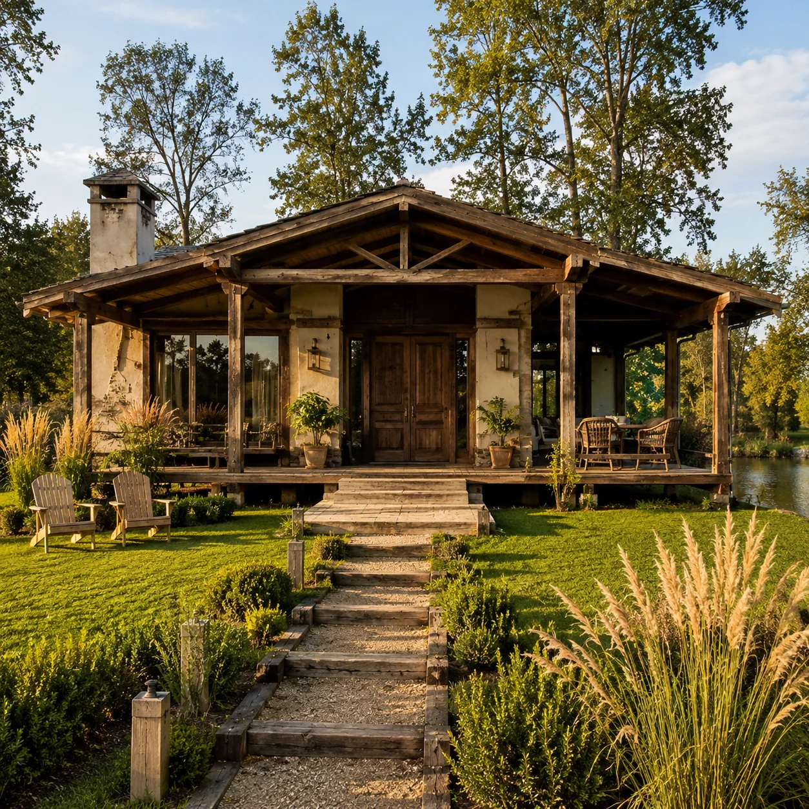
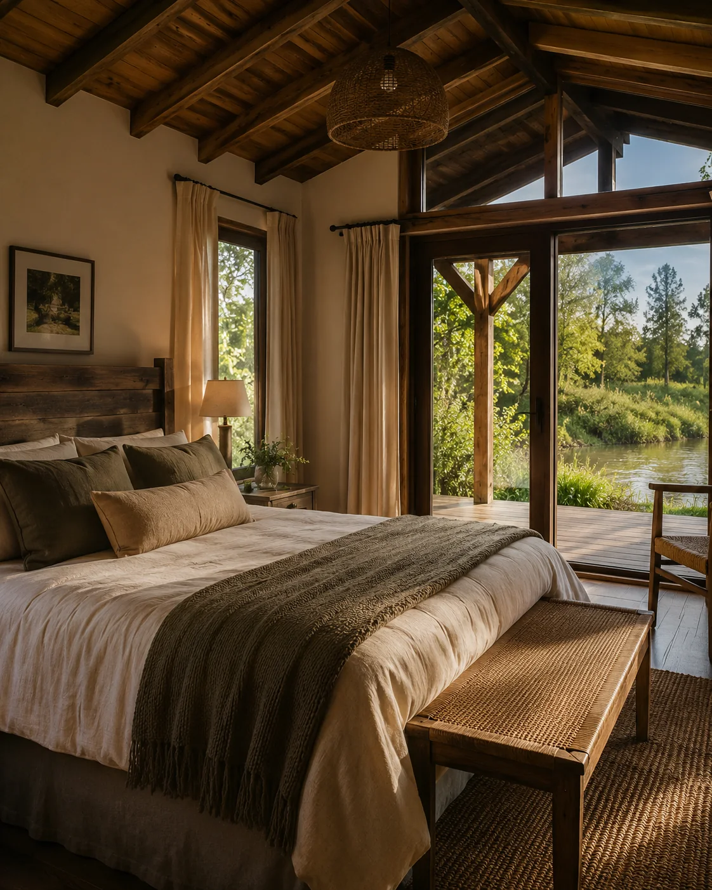
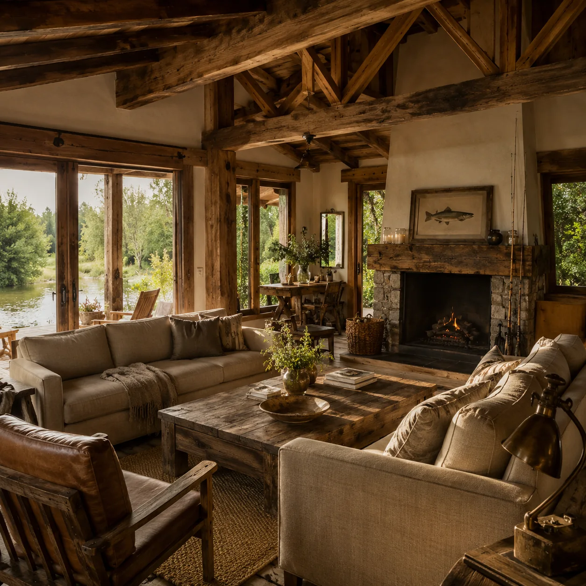
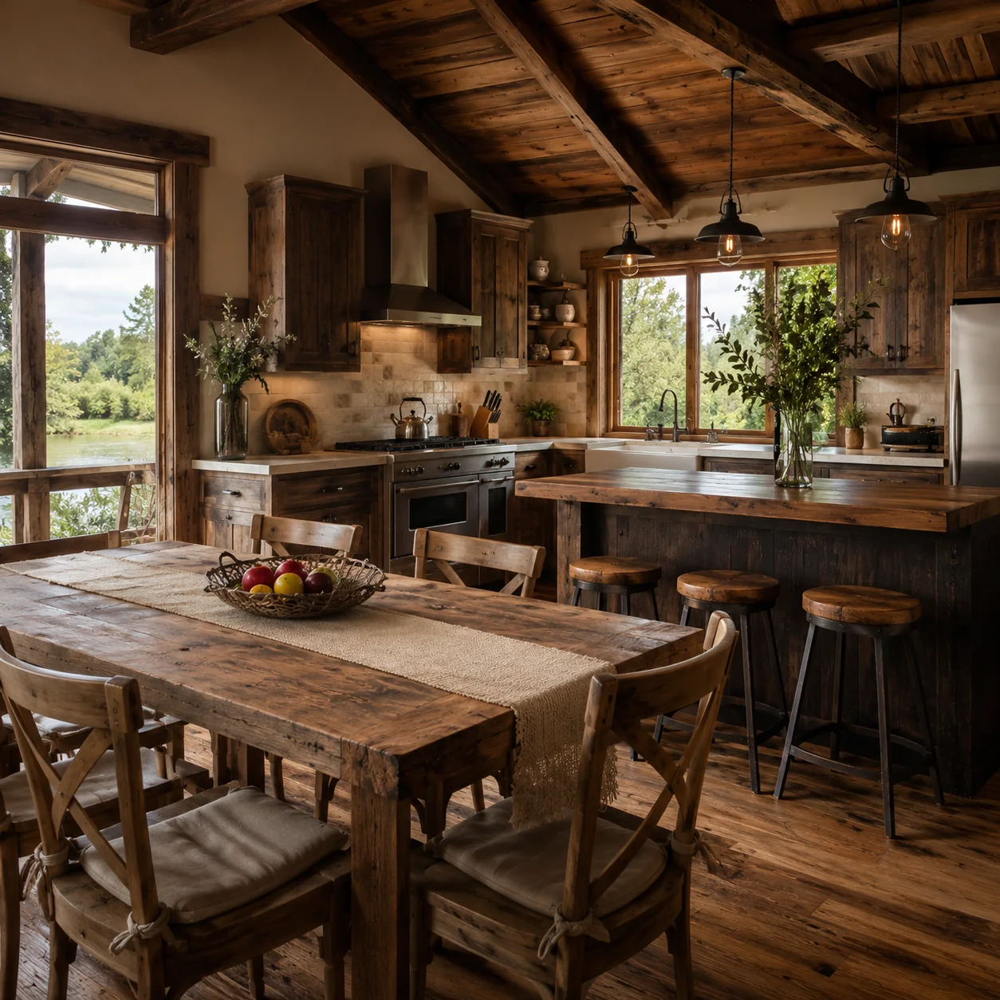
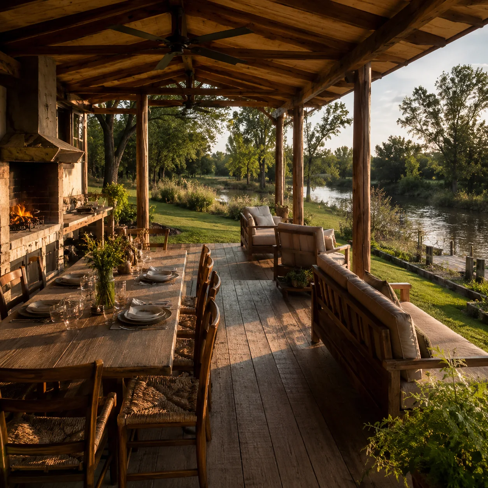
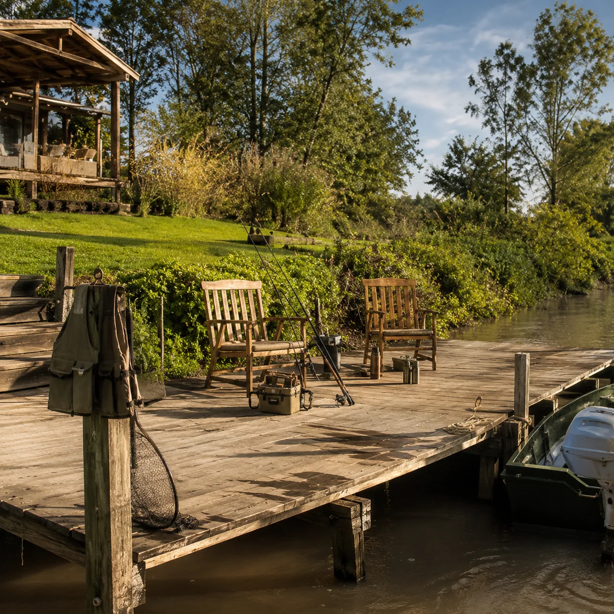
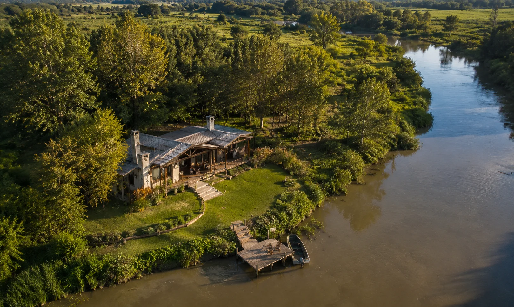

Santa Rosa de Calchines · Ruta de la Costa · Santa Fe
Despertate frente al río,
volvé con historias de pesca.
Cabañas de madera sobre la ribera, muelle propio, asador en la galería y el monte de las islas ahí nomás. Para el que busca desconectar en serio.
Las cabañas
Madera, río y nada que te apure
Cabañas equipadas para 2 a 6 personas, todas con galería, asador propio y el verde hasta el agua.





Toda cabaña incluye
- Ropa blanca y toallas
- Cocina equipada y vajilla
- Aire acondicionado frío/calor
- Galería con asador propio
- Acceso al muelle de pesca
- Cochera dentro del predio

Pesca
Surubí, dorado y pacú a metros de la cama
Tirás la línea desde el muelle apenas te levantás, o salís embarcado con guía local que conoce cada correntada del San Javier. Equipo y carnada incluidos si no traés el tuyo.
- Muelle propio iluminado, para pescar a cualquier hora
- Salidas guiadas en lancha, medio día o día completo
- Devolución del pez recomendada: el río se cuida entre todos
Paseos
Las islas, de puerta para afuera
Paseos en lancha entre riachos y albardones, avistaje de aves del monte, atardeceres que no entran en el teléfono. El guía arma el recorrido según el día y el agua.
- Recorridos por las islas y riachos del San Javier
- Avistaje de aves: martín pescador, garzas, chajás
- Paseo del atardecer, el favorito de los que vuelven

Un día en Don Juvenal
De la bruma del amanecer al fogón
- 06:30Mate en el muelleLa bruma sobre el agua y el primer pique del día.
- 08:00Salida de pescaEmbarcados con el guía, buscando el dorado.
- 13:00Asado en la galeríaBrasas propias, mesa larga, siesta opcional.
- 17:30Paseo por las islasRiachos, aves y el atardecer desde el agua.
- 21:30Fogón y cielo abiertoGuitarra si hay, estrellas seguro.
Reservas
Armá tu estadía en un minuto
Elegí cabaña, fechas y extras: te respondemos por WhatsApp con disponibilidad y cómo señar. Sin cuentas, sin tarjeta, sin vueltas.
«Saqué mi primer surubí a veinte metros de la cama. El guía sabía exactamente dónde parar la lancha.»
«Fuimos por dos noches y nos quedamos cuatro. El asado en la galería mirando el río no se explica, se vive.»
Ubicación
A 40 minutos de Santa Fe, a un mundo de distancia
Estamos en Santa Rosa de Calchines, sobre la Ruta de la Costa (RP 1), el corredor de pesca más conocido de Santa Fe. Venís por asfalto hasta la puerta.
- Desde Santa Fe capitalRP 1 hacia el norte, 45 km por la costa.
- Desde ParanáTúnel subfluvial + RP 1, poco más de una hora.
- Desde RosarioAP 01 hasta Santa Fe y seguís por la RP 1.
Al reservar te mandamos la ubicación exacta por WhatsApp.
Preguntas frecuentes
Antes de armar el bolso
¿A qué hora son el check-in y el check-out?
El check-in es a partir de las 14:00 y el check-out hasta las 10:00. Si la cabaña está libre, coordinamos horarios flexibles sin cargo.
¿Puedo ir con mi perro?
Sí, avisando al reservar. Hay parque abierto para que corra; adentro de la cabaña, con su manta propia.
¿Necesito llevar equipo de pesca?
Podés traer el tuyo y pescar desde el muelle, o coordinar una salida guiada en lancha con equipo y carnada incluidos.
¿Qué incluye la cabaña?
Ropa blanca, cocina equipada, aire acondicionado, galería con asador propio y acceso al muelle. Traé lo que quieras cocinar y nada más.
El río de noche también es un plan
Fogón encendido, cielo sin luces de ciudad y la cabaña esperándote con la cama hecha. Escribinos y buscá fecha.